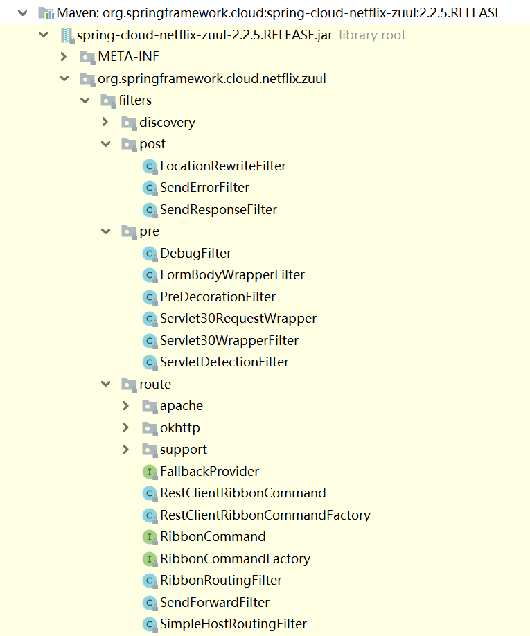
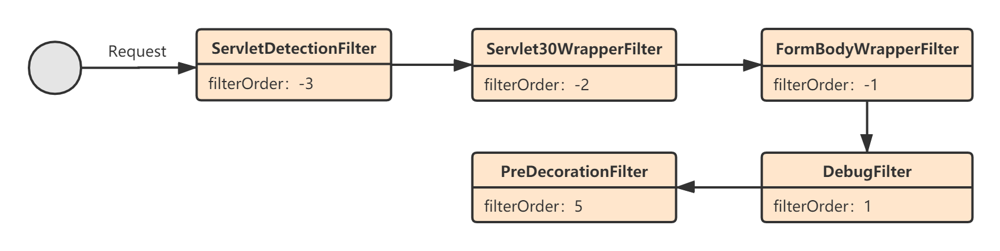
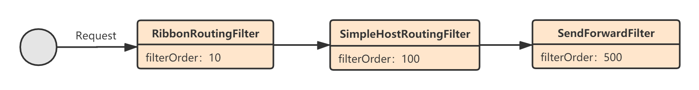
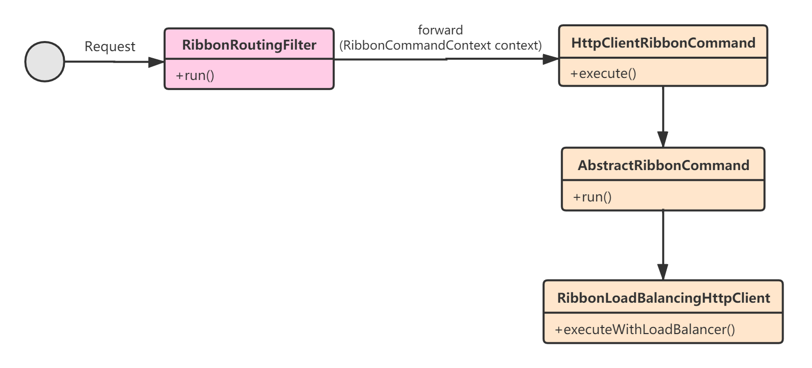
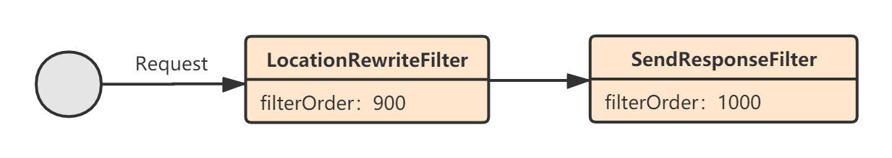

Zuul的核心功能都是通过一个个过滤器（Filter）来实现的。本章，我就对Zuul的各种过滤器（Filter）进行讲解。Zuul一共有四种类型的过滤器，Spring Cloud启动时会注入以下类型的过滤器（数字表示优先级）：
Pre过滤器：
Route过滤器：
Post过滤器：
Error过滤器：
上述这些过滤器全部定义在Spring Cloud Netflix Zuul的filters包目录下：

ZuulServlet在处理请求时，会将请求交给ZuulRunner处理，而ZuulRunner内部又将请求交给FilterProcessor处理，以Pre Filter为例：
// ZuulServlet.java
public void preRoute() throws ZuulException {
try {
// 执行所有Pre Filters
runFilters("pre");
} catch (ZuulException e) {
throw e;
} catch (Throwable e) {
throw new ZuulException(e, 500, "UNCAUGHT_EXCEPTION_IN_PRE_FILTER_" + e.getClass().getName());
}
}
public Object runFilters(String sType) throws Throwable {
// DEBUG日志
if (RequestContext.getCurrentContext().debugRouting()) {
Debug.addRoutingDebug("Invoking {" + sType + "} type filters");
}
boolean bResult = false;
// 获取所有Filters
List<ZuulFilter> list = FilterLoader.getInstance().getFiltersByType(sType);
if (list != null) {
for (int i = 0; i < list.size(); i++) {
ZuulFilter zuulFilter = list.get(i);
// 执行Filter
Object result = processZuulFilter(zuulFilter);
if (result != null && result instanceof Boolean) {
bResult |= ((Boolean) result);
}
}
}
return bResult;
}
上述比较关键的一行代码是：List<ZuulFilter> list = FilterLoader.getInstance().getFiltersByType(sType);。这里会获取所有“Pre”类型的Filters，并对其按照优先级排序：
// FilterLoader.java
public List<ZuulFilter> getFiltersByType(String filterType) {
List<ZuulFilter> list = hashFiltersByType.get(filterType);
if (list != null) return list;
list = new ArrayList<ZuulFilter>();
Collection<ZuulFilter> filters = filterRegistry.getAllFilters();
for (Iterator<ZuulFilter> iterator = filters.iterator(); iterator.hasNext(); ) {
ZuulFilter filter = iterator.next();
if (filter.filterType().equals(filterType)) {
list.add(filter);
}
}
// 根据优先级排序，ZuulFilter实现了Comparable接口
Collections.sort(list);
hashFiltersByType.putIfAbsent(filterType, list);
return list;
}
我们首先来看Pre过滤器，默认情况下的Pre过滤器的执行流程如下：

ServletDetectionFilter的功能比较简单，就是往请求上下文RequestContext中设置了一个标识IS_DISPATCHER_SERVLET_REQUEST_KEY，用来表示该请求是直接来自DispatcherServlet还是ZuulServlet：
public class ServletDetectionFilter extends ZuulFilter {
//...
@Override
public Object run() {
RequestContext ctx = RequestContext.getCurrentContext();
HttpServletRequest request = ctx.getRequest();
// 设置标识
if (!(request instanceof HttpServletRequestWrapper)
&& isDispatcherServletRequest(request)) {
ctx.set(IS_DISPATCHER_SERVLET_REQUEST_KEY, true);
}
else {
ctx.set(IS_DISPATCHER_SERVLET_REQUEST_KEY, false);
}
return null;
}
private boolean isDispatcherServletRequest(HttpServletRequest request) {
return request.getAttribute(
DispatcherServlet.WEB_APPLICATION_CONTEXT_ATTRIBUTE) != null;
}
}
Servlet30WrapperFilter的功能也很简单，就是对HttpServletRequest进行了一层包装：
public class Servlet30WrapperFilter extends ZuulFilter {
//..
@Override
public Object run() {
RequestContext ctx = RequestContext.getCurrentContext();
HttpServletRequest request = ctx.getRequest();
if (request instanceof HttpServletRequestWrapper) {
request = (HttpServletRequest) ReflectionUtils
.getField(this.requestField,request);
ctx.setRequest(new Servlet30RequestWrapper(request));
}
else if (RequestUtils.isDispatcherServletRequest()) {
ctx.setRequest(new Servlet30RequestWrapper(request));
}
return null;
}
}
class Servlet30RequestWrapper extends HttpServletRequestWrapper {
private HttpServletRequest request;
Servlet30RequestWrapper(HttpServletRequest request) {
super(request);
this.request = request;
}
@Override
public HttpServletRequest getRequest() {
return this.request;
}
}
FormBodyWrapperFilter一般情况下不会执行，仅当是表单请求（application/x-www-form-urlencoded）或直接来自DispatcherServlet的文件上传请求时才会执行：
// FormBodyWrapperFilter.java
public boolean shouldFilter() {
RequestContext ctx = RequestContext.getCurrentContext();
HttpServletRequest request = ctx.getRequest();
String contentType = request.getContentType();
// Don't use this filter on GET method
if (contentType == null) {
return false;
}
// Only use this filter for form data and only for multipart data in a DispatcherServlet handler
try {
MediaType mediaType = MediaType.valueOf(contentType);
return MediaType.APPLICATION_FORM_URLENCODED.includes(mediaType)
|| (isDispatcherServletRequest(request)
&& MediaType.MULTIPART_FORM_DATA.includes(mediaType));
}
catch (InvalidMediaTypeException ex) {
return false;
}
}
此外，它的主要功能是用一个FormBodyRequestWrapper对象包装了下HttpServletRequest：
public Object run() {
RequestContext ctx = RequestContext.getCurrentContext();
HttpServletRequest request = ctx.getRequest();
FormBodyRequestWrapper wrapper = null;
if (request instanceof HttpServletRequestWrapper) {
HttpServletRequest wrapped = (HttpServletRequest) ReflectionUtils
.getField(this.requestField, request);
// 包装HttpServletRequest
wrapper = new FormBodyRequestWrapper(wrapped);
ReflectionUtils.setField(this.requestField, request, wrapper);
if (request instanceof ServletRequestWrapper) {
ReflectionUtils.setField(this.servletRequestField, request, wrapper);
}
}
else {
wrapper = new FormBodyRequestWrapper(request);
ctx.setRequest(wrapper);
}
if (wrapper != null) {
ctx.getZuulRequestHeaders().put("content-type", wrapper.getContentType());
}
return null;
}
DebugFilter，顾名思义，就是打开Debug标识，这样在后续运行过程中会打印一些Debug日志：
public class DebugFilter extends ZuulFilter {
@Override
public boolean shouldFilter() {
// 仅当请求中有参数：debug = true时，才会执行该Filter
HttpServletRequest request = RequestContext.getCurrentContext().getRequest();
if ("true".equals(request.getParameter(DEBUG_PARAMETER.get()))) {
return true;
}
return ROUTING_DEBUG.get();
}
@Override
public Object run() {
// 设置debug标识
RequestContext ctx = RequestContext.getCurrentContext();
ctx.setDebugRouting(true);
ctx.setDebugRequest(true);
return null;
}
}
PreDecorationFilter，是Pre Filter中最核心的一个过滤器。它的核心作用就是解析请求URI，然后根据路由定位器（RouteLocater）找到与该URI匹配的路由：
// PreDecorationFilter.java
public Object run() {
RequestContext ctx = RequestContext.getCurrentContext();
// 1.获取请求URI
final String requestURI = this.urlPathHelper.getPathWithinApplication(ctx.getRequest());
// 2.匹配路由
Route route = this.routeLocator.getMatchingRoute(requestURI);
if (route != null) {
String location = route.getLocation();
if (location != null) {
ctx.put(REQUEST_URI_KEY, route.getPath());
ctx.put(PROXY_KEY, route.getId());
// 省略设置RequestContext的信息...
}
}
else {
log.warn("No route found for uri: " + requestURI);
String forwardURI = getForwardUri(requestURI);
ctx.set(FORWARD_TO_KEY, forwardURI);
}
return null;
}
我们来看最核心的一行代码：this.routeLocator.getMatchingRoute(requestURI)。默认情况下，routeLocator就是SimpleRouteLocator，它的作用就是根据application.yml中的route配置与请求URI进行匹配，找到一个匹配的Route，然后会将Route信息保存到请求上下文：
// SimpleRouteLocator.java
protected Route getRoute(ZuulRoute route, String path) {
if (route == null) {
return null;
}
if (log.isDebugEnabled()) {
log.debug("route matched=" + route);
}
// 下面的代码的核心目的就是解析URI和构造匹配的Route对象
String targetPath = path;
String prefix = this.properties.getPrefix();
if (prefix.endsWith("/")) {
prefix = prefix.substring(0, prefix.length() - 1);
}
if (path.startsWith(prefix + "/") && this.properties.isStripPrefix()) {
targetPath = path.substring(prefix.length());
}
if (route.isStripPrefix()) {
int index = route.getPath().indexOf("*") - 1;
if (index > 0) {
String routePrefix = route.getPath().substring(0, index);
targetPath = targetPath.replaceFirst(routePrefix, "");
prefix = prefix + routePrefix;
}
}
Boolean retryable = this.properties.getRetryable();
if (route.getRetryable() != null) {
retryable = route.getRetryable();
}
return new Route(route.getId(), targetPath, route.getLocation(), prefix,
retryable,
route.isCustomSensitiveHeaders() ? route.getSensitiveHeaders() : null,
route.isStripPrefix());
}
举个例子，比如我们的路由配置如下，请求URI是http://ZuulServer/demo/sayHello：
zuul:
routes:
MyService:
path: /demo/**
那么解析返回的Route对象如下：
{
"id": 'MyService',
"fullPath": '/demo/sayHello',
"path": '/sayHello',
"location": 'MyService',
"prefix": '/demo',
"retryable": false,
"sensitiveHeaders": [],
"customSensitiveHeaders": false,
"prefixStripped": true
}
我们再来看Route过滤器，默认情况下的Route过滤器的执行流程如下：

RibbonRoutingFilter，基于Ribbon负载均衡将请求转发到对应的后端服务。它的核心功能就是构造了一个HystrixCommand——HttpClientRibbonCommand，这个Command集成了Ribbon的功能，所以最后就变成了执行HystrixCommand实现基于Ribbon的服务调用。整个流程可以用下面这张表表述：

// RibbonRoutingFilter.java
@Override
public Object run() {
RequestContext context = RequestContext.getCurrentContext();
this.helper.addIgnoredHeaders();
try {
// 1.构造一个包含Ribbon相关信息的请求上下文
RibbonCommandContext commandContext = buildCommandContext(context);
// 2.调用后端服务
ClientHttpResponse response = forward(commandContext);
// 3.设置响应
setResponse(response);
return response;
}
//...
}
上述代码的重点就是forward这个方法，它的内部创建一个HystrixCommand：
// RibbonRoutingFilter.java
protected ClientHttpResponse forward(RibbonCommandContext context) throws Exception {
//...
// 1.构造一个HystrixCommand
RibbonCommand command = this.ribbonCommandFactory.create(context);
try {
// 2.执行Command
ClientHttpResponse response = command.execute();
this.helper.appendDebug(info, response.getRawStatusCode(),
response.getHeaders());
return response;
}
catch (HystrixRuntimeException ex) {
return handleException(info, ex);
}
}
我们来看这个HystrixCommand是如何创建的：
// HttpClientRibbonCommandFactory.java
public HttpClientRibbonCommand create(final RibbonCommandContext context) {
FallbackProvider zuulFallbackProvider = getFallbackProvider(context.getServiceId());
// 服务ID
final String serviceId = context.getServiceId();
// Ribbon客户端
final RibbonLoadBalancingHttpClient client = this.clientFactory
.getClient(serviceId, RibbonLoadBalancingHttpClient.class);
client.setLoadBalancer(this.clientFactory.getLoadBalancer(serviceId));
// 创建一个HttpClientRibbonCommand
return new HttpClientRibbonCommand(serviceId, client, context, zuulProperties,
zuulFallbackProvider, clientFactory.getClientConfig(serviceId));
}
最后，HttpClientRibbonCommand的执行代码如下，实际是调用了父类AbstractRibbonCommand的run()方法：
// AbstractRibbonCommand.java
protected ClientHttpResponse run() throws Exception {
final RequestContext context = RequestContext.getCurrentContext();
RQ request = createRequest();
RS response;
boolean retryableClient = this.client instanceof AbstractLoadBalancingClient
&& ((AbstractLoadBalancingClient) this.client)
.isClientRetryable((ContextAwareRequest) request);
if (retryableClient) {
// 利用RibbonClient发起调用，内部会和Eureka集成
response = this.client.execute(request, config);
}
else {
response = this.client.executeWithLoadBalancer(request, config);
}
context.set("ribbonResponse", response);
if (this.isResponseTimedOut()) {
if (response != null) {
response.close();
}
}
return new RibbonHttpResponse(response);
}
SimpleHostRoutingFilter，直接将请求转发到后端的某个URL。这个Filter的使用场景一般是后端服务就是一个URL地址，所以它的主要逻辑是对请求URI和目标主机地址进行解析，然后利用底层的HttpClient发起调用：
// SimpleHostRoutingFilter.java
public Object run() {
RequestContext context = RequestContext.getCurrentContext();
HttpServletRequest request = context.getRequest();
MultiValueMap<String, String> headers = this.helper.buildZuulRequestHeaders(request);
MultiValueMap<String, String> params = this.helper.buildZuulRequestQueryParams(request);
String verb = getVerb(request);
InputStream requestEntity = getRequestBody(request);
if (getContentLength(request) < 0) {
context.setChunkedRequestBody();
}
// 构造请求URI
String uri = this.helper.buildZuulRequestURI(request);
this.helper.addIgnoredHeaders();
try {
// 请求调用
CloseableHttpResponse response = forward(this.httpClient, verb, uri, request,
headers, params, requestEntity);
// 设置响应
setResponse(response);
}
catch (Exception ex) {
throw new ZuulRuntimeException(handleException(ex));
}
return null;
}
private CloseableHttpResponse forward(CloseableHttpClient httpclient, String verb,
String uri, HttpServletRequest request,
MultiValueMap<String, String> headers,
MultiValueMap<String, String> params,
InputStream requestEntity) throws Exception {
Map<String, Object> info = this.helper.debug(verb, uri, headers, params, requestEntity);
URL host = RequestContext.getCurrentContext().getRouteHost();
// 获取请求目的主机信息
HttpHost httpHost = getHttpHost(host);
uri = StringUtils.cleanPath(MULTIPLE_SLASH_PATTERN.matcher(host.getPath() + uri).replaceAll("/"));
long contentLength = getContentLength(request);
ContentType contentType = null;
if (request.getContentType() != null) {
contentType = ContentType.parse(request.getContentType());
}
InputStreamEntity entity = new InputStreamEntity(requestEntity, contentLength,contentType);
HttpRequest httpRequest = buildHttpRequest(verb, uri, entity, headers, params,request);
try {
// 执行请求
CloseableHttpResponse zuulResponse = forwardRequest(httpclient, httpHost,httpRequest);
return zuulResponse;
}
finally {
}
}
private CloseableHttpResponse forwardRequest(CloseableHttpClient httpclient,
HttpHost httpHost,
HttpRequest httpRequest) throws IOException {
// 就是利用了HttpClient进行调用
return httpclient.execute(httpHost, httpRequest);
}
SendForwardFilter，会将请求转发给Zuul网关自己的某个服务接口。它会根据请求上下文的信息判断是否需要重定向，如果需要就会通过RequestDispatcher完成请求重定向：
// SendForwardFilter.java
public Object run() {
try {
RequestContext ctx = RequestContext.getCurrentContext();
// 请求转发URI
String path = (String) ctx.get(FORWARD_TO_KEY);
// 获取RequestDispatcher，用来做请求转发
RequestDispatcher dispatcher = ctx.getRequest().getRequestDispatcher(path);
if (dispatcher != null) {
ctx.set(SEND_FORWARD_FILTER_RAN, true);
if (!ctx.getResponse().isCommitted()) {
// 请求转发
dispatcher.forward(ctx.getRequest(), ctx.getResponse());
ctx.getResponse().flushBuffer();
}
}
}
catch (Exception ex) {
ReflectionUtils.rethrowRuntimeException(ex);
}
return null;
}
我们再来看Post过滤器，默认情况下的Post过滤器的执行流程如下：

LocationRewriteFilter，这个Filter默认情况下是不执行的，它会根据Http响应码来判断是否需要执行，当响应码为3开头时才会执行：
// LocationRewriteFilter.java
public boolean shouldFilter() {
RequestContext ctx = RequestContext.getCurrentContext();
int statusCode = ctx.getResponseStatusCode();
// 以3开头的http响应码，
return HttpStatus.valueOf(statusCode).is3xxRedirection();
}
LocationRewriteFilter的作用就是当需要重定向时（注意与请求转发的区别），修改http响应头的信息：
// LocationRewriteFilter.java
public Object run() {
RequestContext ctx = RequestContext.getCurrentContext();
Route route = routeLocator.getMatchingRoute(urlPathHelper.getPathWithinApplication(ctx.getRequest()));
if (route != null) {
Pair<String, String> lh = locationHeader(ctx);
if (lh != null) {
// 重定向地址
String location = lh.second();
URI originalRequestUri = UriComponentsBuilder
.fromHttpRequest(new ServletServerHttpRequest(ctx.getRequest()))
.build().toUri();
UriComponentsBuilder redirectedUriBuilder = UriComponentsBuilder
.fromUriString(location);
UriComponents redirectedUriComps = redirectedUriBuilder.build();
String newPath = getRestoredPath(this.zuulProperties, route,
redirectedUriComps);
String modifiedLocation = redirectedUriBuilder
.scheme(originalRequestUri.getScheme())
.host(originalRequestUri.getHost())
.port(originalRequestUri.getPort()).replacePath(newPath).build()
.toUriString();
lh.setSecond(modifiedLocation);
}
}
return null;
}
SendResponseFilter，顾名思义，就是最后响应客户端请求的Filter。它的核心逻辑就是添加响应头，然后写字节流：
// SendResponseFilter.java
public Object run() {
try {
// 1.添加一些响应头信息
addResponseHeaders();
// 2.写响应数据流
writeResponse();
}
catch (Exception ex) {
ReflectionUtils.rethrowRuntimeException(ex);
}
return null;
}
具体代码我就不贴了，就是些常规的J2EE Servlet的HttpServletResponse的数据读写方法。
最后，我们来看下Error过滤器，Error过滤器会在Pre、Route、Post过滤器执行过程中抛出异常时执行，但是它执行完成后最终还是会流向Post过滤器，因为需要通过Post过滤器将请求结果返回给客户端。
在Pre、Route、Post阶段，任何一个阶段抛出异常，都会执行SendErrorFilter，它最终会将请求转发到/error路径：：
// SendErrorFilter.java
public Object run() {
try {
RequestContext ctx = RequestContext.getCurrentContext();
ExceptionHolder exception = findZuulException(ctx.getThrowable());
HttpServletRequest request = ctx.getRequest();
request.setAttribute("javax.servlet.error.status_code",exception.getStatusCode());
log.warn("Error during filtering", exception.getThrowable());
request.setAttribute("javax.servlet.error.exception", exception.getThrowable());
if (StringUtils.hasText(exception.getErrorCause())) {
request.setAttribute("javax.servlet.error.message", exception.getErrorCause());
}
// 请求转发，this.errorPath == ${error.path:/error}，默认为/error，可通过参数配置
RequestDispatcher dispatcher = request.getRequestDispatcher(this.errorPath);
if (dispatcher != null) {
ctx.set(SEND_ERROR_FILTER_RAN, true);
if (!ctx.getResponse().isCommitted()) {
ctx.setResponseStatusCode(exception.getStatusCode());
dispatcher.forward(request, ctx.getResponse());
}
}
}
catch (Exception ex) {
ReflectionUtils.rethrowRuntimeException(ex);
}
return null;
}
本章，我对Spring Cloud Netflix Zuul中的默认过滤器进行了详细讲解。至此，Zuul的核心源码就分析完了。其实Zuul相对于其它几个Netflix微服务框架的源码，本身就是比较简单的，它的核心就是利用了职责链模式对请求进行拦截处理，以及路由匹配机制。
从下一章开始，我就要进入实践环节的讲解了，理解了Netfilx微服务框架的源码，在实践中去运用这些框架将会知其所以然。我将引入一个分布式电商系统作为示例进行讲解，重点针对生产运行过程中Spring Cloud Netflix的各个框架的核心参数进行分析。